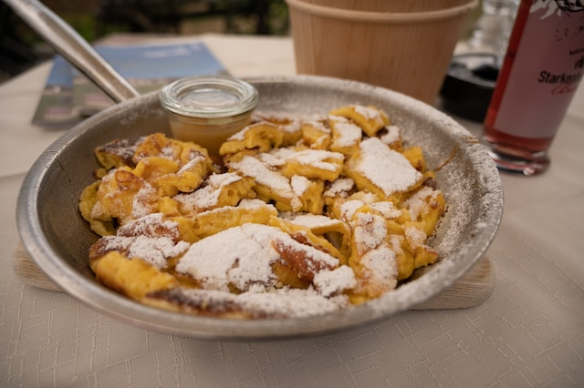

Kaiserschmarrn

Bildquelle: unsplash, babettelandmesser
Leckerer Kaiserschmarrn nach Familienrezept
Die klassische süße Hauptspeise – Kaiserschmarrn mag jeder!
Ich zeige dir wie einfach und schnell du köstlichen Kaiserschmarrn zubereiten kannst!
Zutaten
Zutaten für 4 Personen
- 4 Eier
- 125 g Mehl
- 125 ml Milch
- 1 Prise Salz
- 1 TL Backpulver
- 40 g Zucker
- 80 g Rosinen
- 4 EL Butter
- 1 EL Puderzucker zum Bestreuen
Schritte
- Eier trennen. Eigelb mit Mehl, Milch, Salz, Backpulver und Zucker zu einem glatten Teig verarbeiten und 10 Min. ruhen lassen.
- Eiweiße zu einem stabilen Eischnee schlagen und vorsichtig unter den Teig heben. Anschließend die Rosinen hinzugeben.
- 2 EL Butter in eine Pfanne geben und bei mittlerer Temperatur einen knusprigen Pfannkuchen braten. Den Pfannkuchen wenden und die restliche Butter hinzufügen. Nach dem backen den Pfannkuchen in Stücke reißen und mit dem Puderzucker bestreuen.
Quelle des Rezepts: einfachbacken.de